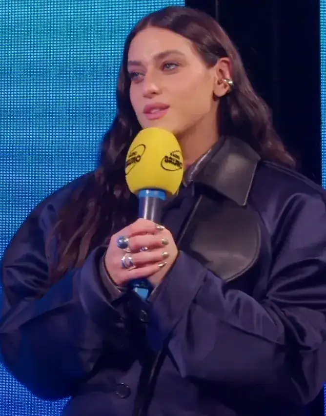

What Lovelock proposed
In 1972 the chemist James Lovelock published a short paper in Atmospheric Environment arguing that the Earth's atmosphere is in a state far from chemical equilibrium — oxygen and methane coexisting, for instance, when they should react — and that this disequilibrium is maintained by life. Later, with the biologist Lynn Margulis, he developed the idea into the Gaia hypothesis: the planet's biological and physical systems function together as a self-regulating whole that tends to keep conditions habitable.
Maps, diagrams and images



The evidence he pointed to was real and remains striking: the atmosphere's composition, the long-term stability of ocean salinity, the regulation of surface temperature over hundreds of millions of years despite a brightening Sun.
Daisyworld: making it testable
The obvious objection was that the hypothesis was teleological — it described the planet as keeping itself habitable, which sounds like purpose. So Lovelock and Andrew Watson built a model in 1983: Daisyworld, a planet covered in two kinds of daisy, dark and light, whose growth changes the planet's albedo in a way that stabilises temperature as the Sun brightens.
The model works with no foresight and no cooperation. Each daisy just grows where it can. The regulation emerges. That was the important move: it showed that planetary-scale stability does not require a planet-scale intention.
Natural selection acts on individuals, not planets. Richard Dawkins and others made the decisive criticism: there is no mechanism by which a planet that regulates well out-reproduces one that does not. Gaia, in its strong form, has no unit of selection.
Free riders break it. Any organism that stops contributing and just consumes the regulated conditions would do better — so unregulated systems should win, unless there are additional constraints.
Regulation can be coincidence. A stable property may be a boundary condition of the system rather than something maintained by life. The history of the planet includes mass extinctions and ice ages; it is not a thermostat that has never failed.
What happened next
The scientific community largely did what it does with an over-strong claim: it kept the useful part and dropped the metaphysics. Modern Earth system science studies the same feedbacks — the carbon cycle, the silicate weathering thermostat, ocean circulation, the role of life in atmospheric chemistry — without claiming the planet is an organism.
The terminology survived in a weaker form: "Gaia-like feedbacks", "the Earth system". Lovelock himself moved on to stronger claims in later books — that the planet would punish us (The Revenge of Gaia), and eventually that humans and machines would merge into a self-regulating planetary intelligence (Novacene). Those are Lovelock's opinions, not findings, and they should be filed that way.
Why it belongs in this archive
Because it is the best example of a "fringe" idea that was partly right, and of how that gets remembered wrongly in both directions. Believers cite Gaia as proof that the planet is a living being; sceptics cite its rejection as proof that the whole idea was nonsense. Both are wrong: the strong claim failed, the weak claim is textbook.
The rule that emerges is the archive's most useful one: when a claim is rejected, ask which version was rejected. The same applies to Jaynes, to dark forest, and to the lost continents.
Sources for this page
- Lovelock (1972), “Gaia as seen through the atmosphere”, Atmospheric Environmentsciencedirect.com
- Watson & Lovelock (1983), “Biological homeostasis of the global environment: the parable of Daisyworld”wiley.com
- Wikipedia, “Gaia hypothesis” — history and criticismen.wikipedia.org
- Dawkins, The Extended Phenotype (1982) — the units-of-selection objectionoup.com
- NASA, Earth system science overviewscience.nasa.gov
Open resources on this topic
- BookGaia Ruth Cole (Internet Archive, free to read)
- BookWe Moon 2002 Calendar: Gaia Rhythms for Womyn : An Astrological Moon Calendar Datebook and Daily Guide to Natu — Various Contributors · 2001 (Internet Archive, free to read)
- BookSacred Gaia : holistic theology and earth system science — Primavesi, Anne, 1934- · 2000 (Internet Archive, free to read)
- PapersOpen-access articles: DOAJ · PubMed Central · Internet Archive Scholar
- BooksPublic-domain and borrowable copies: Open Library · Project Gutenberg · Google Books
Cite this page
Momin, S. (2026). Gaia. The Larger World Archive. https://drsamonline.github.io/LARGE_GLOBE/gaia.htmlMomin, Sohil. “Gaia.” The Larger World Archive, 2026, https://drsamonline.github.io/LARGE_GLOBE/gaia.html.Momin, Sohil. “Gaia.” The Larger World Archive, 2026. https://drsamonline.github.io/LARGE_GLOBE/gaia.html.@misc{gaia2026gaia,
author = {Momin, Sohil},
title = {Gaia},
year = {2026},
howpublished = {The Larger World Archive},
url = {https://drsamonline.github.io/LARGE_GLOBE/gaia.html},
note = {Last reviewed 20 November 2026}
}Last reviewed 20 November 2026 · Corrections policy · this page is not peer reviewed